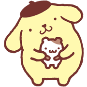
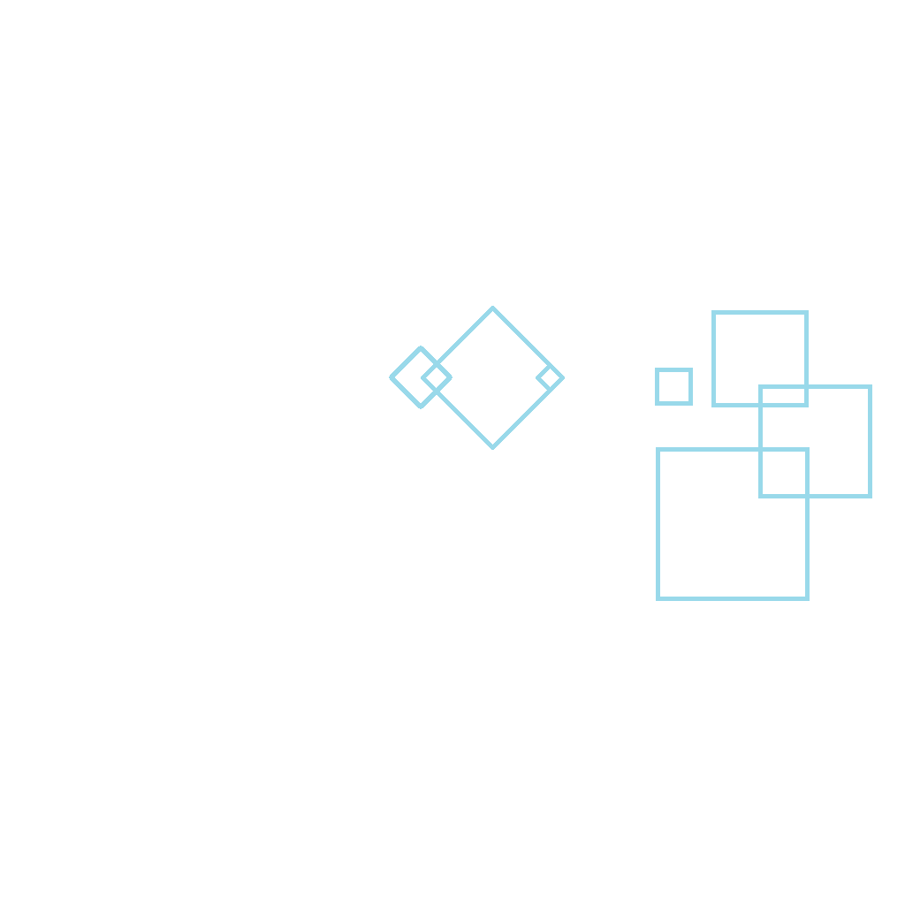
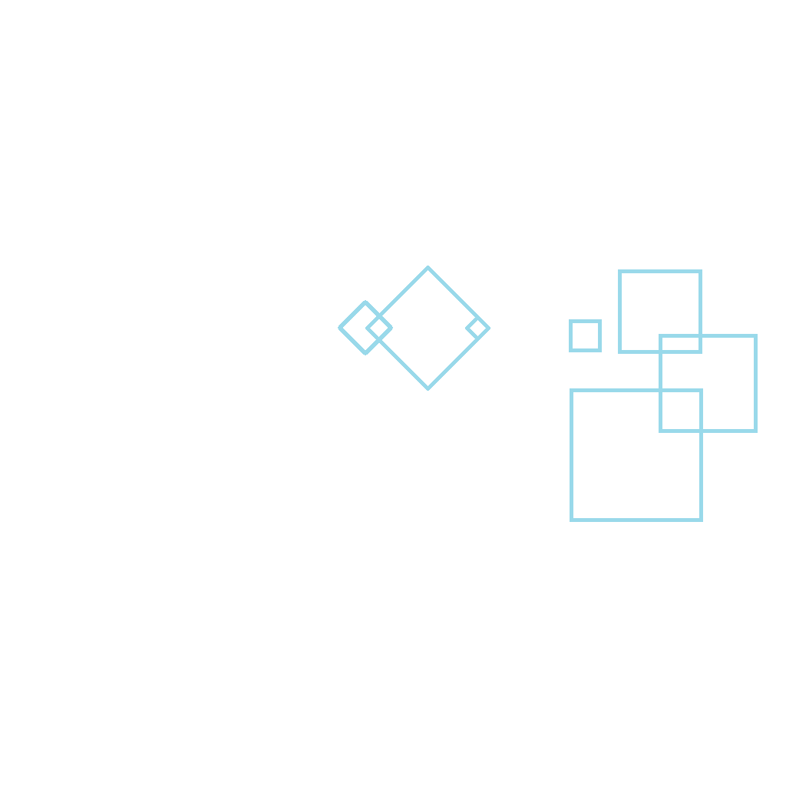
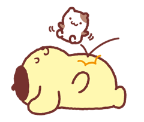

關於茶色帽子的故事：
有一天，我的小主人放了一頂小帽帽在我的頭上，然後大家都說：「哇！好像好好吃的布丁喔！」，從此以後，大家就叫我「布丁狗」，其實我也很喜歡這頂帽子呢！

 

Introduction
我是一隻黃金獵犬，也叫做布丁犬，性別的話用你們人類的語言來說，是男性。我出生在1996年4月16日(據說那天是一個好日子)，星座是牡羊座，我看起來圓圓胖胖的，那是因為我是一隻很愛吃的狗。興趣是蒐集鞋子(一對鞋子中的其中一隻).睡覺.做布丁體操。我住在小主人姐姐家的玄關，個性悠閒自在頭腦遲鈍饞嘴貪吃，最喜歡做的事是去公園散步，最討厭的事是一個人孤零零被關在家；最愛聽的話是"出門囉！"，最討厭聽到的話是"好好看家!"；最喜歡的食物是牛奶和媽媽做的布丁，對未來的夢想是再長大一些些。
Experience 
我的好朋友的命名都是源自於甜點糕餅相關的名詞。在布丁狗相關圖案中，倉鼠、老鼠與松鼠為最常出現的角色。
根據原作者地井明子於香港的採訪表示：「 其實她不是女朋友, 他們只是朋友。」記者:「 但怎麼會有結婚布偶推出過呢?」地井明子: 「哈哈, 其實是Cosplay 來的。雖然她心裡是很喜歡布丁狗的, 但其實大家只是朋友。」瑪卡蘿的主人是美容院店主，瑪卡蘿喜歡可愛時尚並暗地裡可望成為貴賓狗，興趣是收集精緻的小飾品。